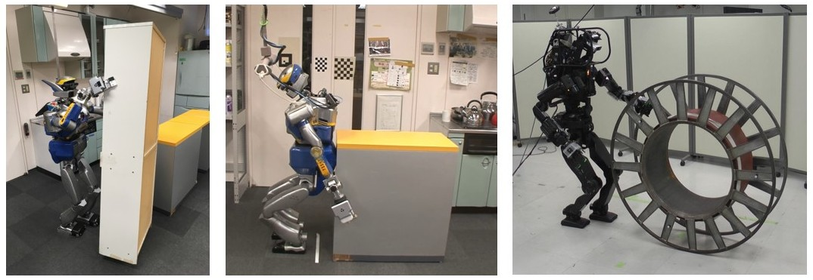

所属
国立研究開発法人 産業技術総合研究所
次世代ものづくり実装研究センター ロボットソフトウェアPF研究チーム
(兼務) インテリジェントシステム研究部門 CNRS-産総研ロボット工学連携研究室
(兼務) 人工知能研究センター 実体知能研究チーム
主任研究員
経歴
職歴
- 2025年4月-現在：
次世代ものづくり実装研究センター ロボットソフトウェアPF研究チーム 主任研究員 - 2022年10月-2025年3月：
産業技術総合研究所 情報・人間工学領域 AIST-CNRSロボット工学連携研究ラボ 主任研究員 - 2023年4月-2024年3月：
経済産業省 製造産業局 産業機械課 ロボット政策室（産総研からの出向） - 2020年4月-2022年9月：
産業技術総合研究所 情報・人間工学領域 AIST-CNRSロボット工学連携研究ラボ 研究員 - 2018年4月-2020年3月：
東京大学大学院 情報理工学系研究科 知能機械情報学専攻 特任助教 - 2015年4月-2018年3月：
日本学術振興会特別研究員 (DC1)
学歴
- 2018年3月：
東京大学大学院 情報理工学系研究科 知能機械情報学専攻 博士課程修了 - 2015年3月：
東京大学大学院 情報理工学系研究科 知能機械情報学専攻 修士課程修了 - 2013年3月：
東京大学 工学部 機械情報工学科 卒業
研究紹介
ヒューマノイドやマニピュレーションを対象に動作計画・制御から認識・学習まで幅広い側面からロボットの研究に取り組んでいます．
ヒューマノイドによるロコマニピュレーション
ヒューマノイドロボットがバランスをとりながら大型重量物を押し・転がし・ピボットなどの多様な操作形態により運搬するための動作生成法の研究に取り組んでいます．
模倣学習によるロボットの運動生成
人間によるデモンストレーションを利用した模倣学習により複雑なマニピュレーションを実現する研究やロボットの模倣学習のためのオープンソフトウェアフレームワークの開発に取り組んでいます．

触覚センシングに基づくロボット制御
分布型の触覚センサをロボットの身体表面に搭載し，全身接触を伴う多点接触運動や物体の抱え上げ動作を実現するために，モデル予測制御や模倣学習において触覚情報を活用する研究に取り組んでいます．

最適化計算に基づく多自由度ロボットの動作生成
多自由度ロボットの複雑な動作生成問題，例えば，ロボットの配置を含む動作軌道計画や全身接触を伴うマニピュレーション姿勢生成を最適化問題として定式化し効率的に解く研究に取り組んでいます．

視覚・力覚センシングによる物理的整合性推論に基づくマニピュレーション
ロボットが未知物体を操作しながら視覚・力覚情報に基づいて物理特性を推定し，その結果に応じて適応的に動作を生成する研究に取り組んでいます．

代表論文

TACT: Humanoid Whole-body Contact Manipulation through Deep Imitation Learning with Tactile Modality
Masaki Murooka, Takahiro Hoshi, Kensuke Fukumitsu, Shimpei Masuda, Marwan Hamze, Tomoya Sasaki, Mitsuharu Morisawa, Eiichi Yoshida
IEEE Robotics and Automation Letters, 2025.
Whole-Body Multi-Contact Motion Control for Humanoid Robots Based on Distributed Tactile Sensors
Masaki Murooka, Kensuke Fukumitsu, Marwan Hamze, Mitsuharu Morisawa, Hiroshi Kaminaga, Fumio Kanehiro, Eiichi Yoshida
IEEE Robotics and Automation Letters, vol. 9, no. 11, pp. 10620-10627, 2024.


Humanoid Loco-Manipulations Pattern Generation and Stabilization Control
Masaki Murooka, Kevin Chappellet, Arnaud Tanguy, Mehdi Benallegue, Iori Kumagai, Mitsuharu Morisawa, Fumio Kanehiro, Abderrahmane Kheddar
IEEE Robotics and Automation Letters, vol. 6, no. 3, pp. 5597-5604, 2021 (Presented at IROS 2021).

Humanoid Loco-Manipulation Planning Based on Graph Search and Reachability Maps
Masaki Murooka, Iori Kumagai, Mitsuharu Morisawa, Fumio Kanehiro, Abderrahmane Kheddar
IEEE Robotics and Automation Letters, vol. 6, no. 2, pp. 1840-1847, 2021 (Presented at ICRA 2021).

Optimization-Based Posture Generation for Whole-Body Contact Motion by Contact Point Search on the Body Surface
Masaki Murooka, Kei Okada, Masayuki Inaba
IEEE Robotics and Automation Letters, vol. 5, no. 2, pp. 2905-2912, 2020 (Presented at ICRA 2020).
研究プロジェクト
研究代表
-
人間からの教示により情報獲得可能な対話型ロボット動作計画システム
科学研究費助成事業 若手研究 2022.4-2026.3 (研究代表者) -
数理モデルと実演解析によるロボット身体と行動知能の同時探索の理論構築と実世界適用
科学研究費助成事業 若手研究 2019.4-2022.3 (研究代表者) -
ヒューマノイドによる日常環境マニピュレーションの物理モデル内在・獲得統合型実現法
科学研究費助成事業 研究活動スタート支援 2018.8-2020.3 (研究代表者) -
実環境反映空間での注意操作性評価によるヒューマノイドの未知遠隔環境自律行動実現法
科学研究費助成事業 特別研究員奨励費 2015.4-2018.3 (研究代表者)
研究分担
-
サイバーフィジカルヒューマンによる全身接触運動の包括的データ駆動学習・予測・生成
科学研究費助成事業 基盤研究(S) 2022.4-2027.3 (研究分担者) -
複雑未知環境下における即時動作を可能とする多点接触運動システムの実現
科学研究費助成事業 基盤研究(B) 2021.4-2024.3 (研究分担者)